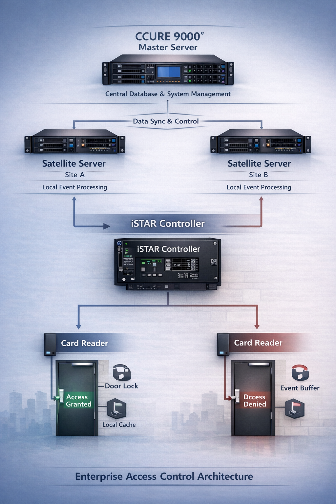
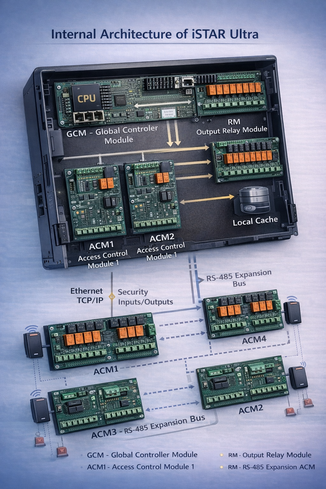
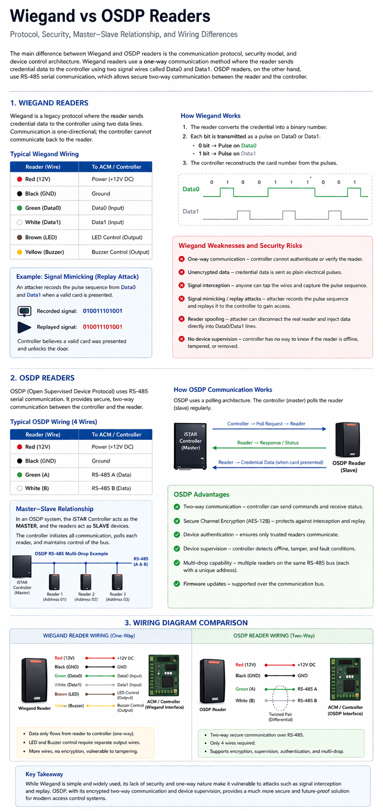

Today, I had my first interview with M.C. Dean.
Going into the conversation, I wasn’t completely sure what to expect. Interviews always bring a certain level of uncertainty, especially when they involve technical discussions about systems you've worked with for many years. I spent time reviewing concepts and thinking through how I would explain my experience, but there is always that moment before an interview where you question whether you are truly prepared and leaves you in that feeling of nervousness.
Overall, the interview went fairly well. In fact, it went better than I initially thought it would.
Interviews are not just about proving what you know — they are opportunities to revisit the fundamentals and sharpen how you explain complex systems.
The Technical Questions
The discussion focused heavily on access control systems and how different components interact with one another. Since my background has been rooted in enterprise physical security systems, these topics felt familiar, though they still required careful explanation.
One of the first questions that came up was about controller communication.
How does an iSTAR panel send signals to the access control system?
An iSTAR controller receives credential data from card readers using Wiegand or OSDP, validates the credential locally using its downloaded access control database, and activates the door relay if access is granted. The controller then generates an event and transmits it to the CCURE server over TCP/IP through the network infrastructure. If the server connection is lost, the controller continues operating locally and stores events until communication is restored.
This architecture allows the system to continue functioning even if the server temporarily loses connectivity, since the controller can still make access decisions locally.

Simplified architecture showing how an iSTAR controller communicates with reader devices, the network, and the access control server.
Controller Expansion
Another question involved controller hardware capabilities.
Can an iSTAR panel have more than two ACM boards?
Yes. An iSTAR controller (certain models like the iSTAR Ultra G2, although not recommended due to potential poll latency) can support more than two ACM boards depending on the model. The first ACM modules connect directly to the controller through the internal backplane, which provides power and communication with the controller CPU. Additional ACM boards, such as ACM3 and ACM4 on an iSTAR Ultra G2, can be connected through an RS-485 multidrop expansion bus where each module is addressed and polled by the controller. Readers connect to the ACM using Wiegand or OSDP, and the ACM passes credential data to the controller for access decision processing using the CCURE database cache.

Reader Communication Protocols
Another topic discussed was reader communication protocols.
What is the difference between an OSDP reader and a Wiegand reader?
The main difference between Wiegand and OSDP readers is the communication protocol and security. Wiegand uses a one-way communication method where the reader sends credential data through Data0 and Data1 wires as electrical pulses. Because this data is unencrypted and the controller cannot authenticate the reader, Wiegand systems are vulnerable to signal interception and replay attacks where an attacker can mimic the credential pulses to gain access. OSDP uses RS-485 serial communication, which allows secure two-way communication between the reader and the controller. In this architecture the controller, such as an iSTAR controller, acts as the master and continuously polls the reader devices on the bus. Readers respond with credential data or status messages, and communication can be encrypted using secure channel encryption. This provides authentication, device supervision, and protection against tampering.

Because of these advantages, many organizations are moving toward OSDP when deploying modern access control systems.
Professional Development
One question that stood out was related to professional growth.
What certifications or training would you like to pursue within the first 90 days?
This question made me reflect on how I would want to grow in the role if given the opportunity. A few areas immediately came to mind:
- Lenel Certified Associate (LCA) or Milestone Certified Integration Technician (MCIT)
- Genetec - Security Center Enterprise Technical Certification
- CompTIA Network+ and CompTIA Security+
- Cisco Certified Network Associate (CCNA)
I would like to expand my knowledge of access control system architectures beyond CCURE so I can gain exposure to other platforms. Since MC Dean supports a wide range of clients and technologies, I want to become more well-versed in multiple systems and broaden my technical expertise.
During my time at Meta I was primarily specialized in CCURE systems, so I didn’t get much exposure to Genetec platforms. One of the trainings I’d like to pursue is the Security Center Enterprise Technical Certification so I can better understand Genetec architectures such as multi-server deployments, federation, and high-availability configurations.
I would want to pursue CompTIA Network+ because modern access control and video systems rely heavily on IP networking. Understanding networking concepts like VLANs, routing, and PoE helps when troubleshooting controller communication issues, camera connectivity, or server infrastructure problems.
I would also want to pursue CompTIA Security+ because physical security systems are increasingly integrated into enterprise IT environments. Understanding cybersecurity concepts like encryption, authentication, and secure network design helps ensure that access control systems and video platforms are deployed securely and protected against vulnerabilities.
While I have strong experience working with CCURE systems, I’d like to deepen my networking knowledge because modern physical security systems are heavily integrated with enterprise IT infrastructure. Pursuing the Cisco CCNA would help me better understand networking concepts like switching, routing, VLANs, and network troubleshooting, which are important when supporting access control controllers, cameras, and security servers in large enterprise environments.
Technology and infrastructure are constantly evolving, and staying current with both system platforms and the underlying networks that support them is essential.
Reflection
After the interview ended, I spent some time reflecting on how it went.
Even when you have years of experience in a field, interviews push you to explain concepts clearly and think more deeply about how systems actually operate. They remind you that knowledge isn’t just about what you know internally—it’s also about how well you can communicate and teach those ideas to others.
What I realized afterward was that the conversation wasn’t nearly as intimidating as I had expected it to be. The questions were thoughtful, the discussion was engaging, and it gave me a chance to reflect on the experience I’ve built working in enterprise physical security environments.
Regardless of the outcome, experiences like this are valuable. They challenge you to sharpen your knowledge, revisit core concepts, and continue learning.
In the end, growth in any technical field isn’t just about what you already know — it’s about staying curious enough to keep learning.
Key Takeaways
- Technical interviews often focus on how clearly you can explain system architecture.
- Understanding how controllers, readers, and servers communicate is fundamental in access control.
- It is important to stay current with modern deployments and how they function.
- Continuous learning in networking, infrastructure, and security platforms is essential in this field.